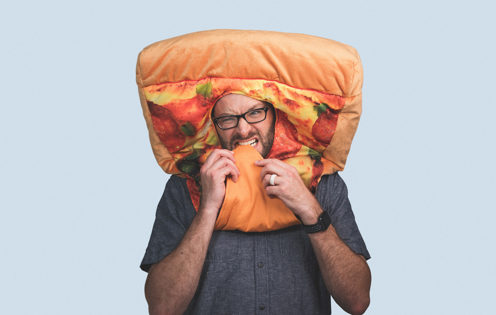

About
I am an interactive and digital designer who likes to laugh with people. I have an insatiable curiosity for learning and a desire to leave things better than I found them. Currently designing at Gauge for clients such as Duck Head, Southern Tide, Orafol Vehicle Wraps, Swarovski, and OldTimeCandy.com.

Freelance Clients
- Two Tides Brewing Co.
- SF Weekly
- Telfair Museums
- Mike Doughty
- The Hornblow Group
- Nocturne Records
Published
- IdN Magazine, Volume 17, Number 5, 2010 – Spay and Neuter Commercial Featured
- Designing Sustainable Packaging, Author: Scott Boylston, Bird Feeder Packaging Featured
Hooray’s and Hurrah’s
- 2018 Print Magazine Regional Design Annual – Two Tides Brewing Co.
- 2010 Savannah ADDY Awards – Silver – Telfair Ball Invitations
- 2010 Print Magazine Print in Motion – Finalist – Where the Wild Things Are
- 2009 UCDA Design Competition – Gold Medalist – Savannah Secession Series
- American Greetings Scholarship for Excellence in Design (2008 – 2009)
- SCAD Savannah Secession Graphic Design Exhibition Planning Committee (2008 – 2009)
Featured
Exhibitions
- 2nd Annual Savannah GIF Festival (January 2016)
- Telfair Art Fair (November 2010, November 2009)
- WTF? What’s the Function, What’s the Failure, What’s the Form Thesis Show (May 2009)
- SCAD Savannah Secession Graphic Design Exhibition (May 2009)
Professional Posse
- AIGA (2006 – present)
- Type Directors Club (2008 – present)
Portrait above by Daniel at Gauge.